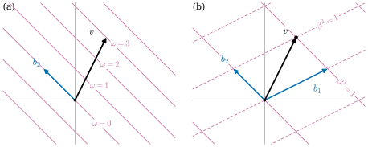

1.3 쌍대공간과 쌍대기저
이 절의 목표
- 쌍대공간 \(V^*\)와 여벡터를 정의하고, 여벡터를 “평행한 등위선들의 모임”으로 그릴 수 있다.
- 기저 \((b_i)\)의 쌍대기저 \((\beta^i)\)를 구성하고 계산할 수 있으며, 여벡터의 성분 \(\omega_i = \omega(b_i)\)를 구할 수 있다.
- 쌍대사상 \(T^*\)의 행렬이 전치행렬임을 알고, 이것으로 행 계수와 열 계수가 같음을 증명할 수 있다.
- \(V \to V^{**}\)는 기저 없이 정해지는 동형이지만 \(V \cong V^*\)에는 그런 동형이 없다는 차이를 설명할 수 있다.
선수 지식
동기
1.2절에서 선형사상 \(T\colon V \to W\)를 다루었다. 그 가운데 도착 공간이 \(\R\) 자체인 것, 즉 벡터를 받아 수 하나를 내는 선형사상은 따로 이름을 붙일 만큼 자주 나온다. 좌표 하나를 읽어 내는 함수 \(x \mapsto x^i\), 한 점에서의 함숫값 \(f \mapsto f(a)\)(예 1.2.2(c))가 그런 예다.
미분기하에서 가장 중요한 예는 함수의 미분이다. 미적분학에서 \(f\colon \R^n \to \R\)의 점 \(p\)에서 방향 \(v\)로의 방향미분은 \(\sum_i \pd{f}{x^i}(p)\, v^i\)였다. 이 값은 \(v\)에 대해 선형이다. 즉 한 점에서 함수의 미분은 “방향벡터를 받아 변화율을 내는” 선형 함수다. 이런 대상들이 모인 공간을 정확히 다루는 것이 이 절의 목표다. 이 공간의 기저는 \(V\)의 기저를 고르면 저절로 하나 생기는데, 그 기저가 1.1절의 성분 \(v^i\)를 읽어 내는 함수들이라는 것이 핵심이다.

쌍대공간과 여벡터
정의 1.3.1 (쌍대공간, dual space). 벡터공간 \(V\)에서 \(\R\)로 가는 선형사상 전체의 벡터공간 \(\Hom(V, \R)\)을 \(V\)의 쌍대공간(dual space)이라 하고 \(V^*\)로 쓴다. \(V^*\)의 원소를 여벡터(covector) 또는 선형범함수(linear functional)라 한다.
\(V^*\)의 덧셈과 스칼라곱은 정의 1.2.1 뒤에서 본 대로 점마다 한다: \((\omega + \eta)(v) = \omega(v) + \eta(v)\), \((a\omega)(v) = a\,\omega(v)\). 여벡터에는 그리스 문자 \(\omega, \eta, \beta\)를 쓴다.
예 1.3.2. (a) (\(\R^n\) 위의 여벡터) 실수 \(a_1, \dots, a_n\)에 대하여 \(\omega(x) = a_1 x^1 + \dots + a_n x^n\)은 \(\R^n\) 위의 여벡터다. 거꾸로 \(\R^n\) 위의 모든 여벡터가 이 꼴이다. \(\omega \in (\R^n)^*\)이면 \(a_i = \omega(e_i)\)로 두었을 때 \(\omega(x) = \omega\big(\sum_i x^i e_i\big) = \sum_i x^i \omega(e_i) = \sum_i a_i x^i\)이기 때문이다. 그래서 \(\R^n\)의 여벡터는 행벡터 \((a_1, \dots, a_n)\)으로 적고, \(\omega(x)\)는 행벡터와 열벡터의 행렬곱이다. \(\omega(x) = x^1 + x^2\)(그림 1.3.1(a))는 행벡터 \((1, 1)\)이다.
(b) (좌표함수) \(i\)번째 성분을 읽는 함수 \(e^i\colon \R^n \to \R\), \(e^i(x) = x^i\)는 여벡터다. (a)의 꼴에서 \(a_i = 1\), 나머지가 \(0\)인 행벡터다.
(c) \(n \times n\) 행렬의 대각합 \(\tr A = \sum_i A^i_i\)는 행렬 공간 위의 여벡터다.
(d) \(P_d\) 위에서 \(p \mapsto p(1)\)과 \(p \mapsto \int_0^1 p(t)\,dt\)는 여벡터다. 적분은 선형이기 때문이다.
비예 1.3.3. \(\R^2\) 위의 다음 함수들은 여벡터가 아니다. (a) \(x \mapsto \sqrt{(x^1)^2 + (x^2)^2}\)(비예 1.2.3(c)). (b) \(x \mapsto x^1 x^2\). \(2e_1 + 2e_2\)에서의 값이 \(4\)인데 \(e_1 + e_2\)에서의 값 \(1\)의 두 배가 아니다. (c) \(x \mapsto x^1 + 1\). \(0\)에서의 값이 \(0\)이 아니다. 이 함수의 등위선도 평행하고 간격이 일정하지만 \(\{\omega = 0\}\)이 원점을 지나지 않는다. 여벡터의 등위선 그림에서는 \(\{\omega = 0\}\)이 반드시 원점을 지난다.
쌍대기저
\(V\)의 기저 \(\mathcal{B} = (b_1, \dots, b_n)\)을 고르면 모든 벡터가 성분 \(v^1, \dots, v^n\)을 갖는다(정의 1.1.14). “\(v\)의 \(i\)번째 성분을 읽는다”는 대응 \(v \mapsto v^i\)는 선형이다. 두 벡터를 더하면 성분이 더해지기 때문이다. 따라서 이 대응은 여벡터다. 이 여벡터들에 이름을 붙이자. 먼저 기호 하나를 준비한다. 크로네커 델타(Kronecker delta)는
이다. 단위행렬의 \(i\)행 \(j\)열 성분이 \(\delta^i_j\)이다.
정의 1.3.4 (쌍대기저, dual basis). \(\mathcal{B} = (b_1, \dots, b_n)\)이 \(V\)의 기저라 하자. 각 \(i\)에 대하여 여벡터 \(\beta^i \in V^*\)를
로 정한다(명제 1.2.4에 의해 이런 선형사상이 꼭 하나 있다). 목록 \((\beta^1, \dots, \beta^n)\)을 \(\mathcal{B}\)의 쌍대기저(dual basis)라 한다. 이 이름이 정당하다는 것, 즉 이것이 \(V^*\)의 기저라는 것은 정리 1.3.5가 보인다.
식 (1.3.2)를 말로 하면 “\(\beta^i\)는 \(b_i\)에서 \(1\), 다른 기저벡터에서 \(0\)”이다. 그러면 \(v = \sum_j v^j b_j\)에서 \(\beta^i(v) = \sum_j v^j \beta^i(b_j) = \sum_j v^j \delta^i_j = v^i\)이다. 즉 \(\beta^i\)는 \(i\)번째 성분을 읽는 함수이고, 앞 문단의 여벡터가 바로 이것이다. \(\R^n\)의 표준기저 \((e_1, \dots, e_n)\)의 쌍대기저는 예 1.3.2(b)의 좌표함수 \((e^1, \dots, e^n)\)이다.
정리 1.3.5 (쌍대기저는 기저다). \(\mathcal{B} = (b_1, \dots, b_n)\)이 \(V\)의 기저이고 \((\beta^1, \dots, \beta^n)\)이 그 쌍대기저이면 다음이 성립한다.
- (a) \((\beta^1, \dots, \beta^n)\)은 \(V^*\)의 기저다. 특히 \(\dim V^* = \dim V\)이다.
- (b) 모든 \(\omega \in V^*\)와 \(v \in V\)에 대하여
이다.
이 정리가 말하는 것. 여벡터 \(\omega\)는 기저벡터에서의 값 \(\omega(b_1), \dots, \omega(b_n)\)이라는 수 \(n\)개로 완전히 정해지고, 그 수들이 쌍대기저에 대한 성분이다. 벡터의 성분을 읽는 것도 쌍대기저가 한다.
증명 아이디어: 두 여벡터가 같은지는 기저벡터에서의 값만 비교하면 된다(명제 1.2.4의 유일성). \(\beta^i\)는 기저벡터에서 \(0\) 또는 \(1\)이므로 비교가 쉽다.
증명. (b)의 둘째 식은 위에서 본 \(\beta^i(v) = v^i\)이다. (b)의 첫째 식을 보이자. \(\eta = \sum_i \omega(b_i)\beta^i\)로 두면 각 \(b_j\)에서 \[ \eta(b_j) = \sum_i \omega(b_i)\,\beta^i(b_j) = \sum_i \omega(b_i)\,\delta^i_j = \omega(b_j) \] 이다. \(\eta\)와 \(\omega\)는 기저벡터에서 값이 같은 선형사상이므로 명제 1.2.4의 유일성에 의해 \(\eta = \omega\)이다.
(a) (b)의 첫째 식에서 \((\beta^i)\)는 \(V^*\)를 생성한다. 일차독립임을 보이자. \(\sum_i a_i \beta^i = 0\)(영여벡터)이라 하자. 양변을 \(b_j\)에서 계산하면 \(0 = \sum_i a_i \beta^i(b_j) = \sum_i a_i \delta^i_j = a_j\)이다. 모든 \(j\)에 대해 이렇게 하면 모든 계수가 \(0\)이다. 길이가 \(n\)인 기저가 있으므로 \(\dim V^* = n\)이다.
정리 1.3.5에 따라 여벡터 \(\omega\)의 쌍대기저에 대한 성분(정의 1.1.14)은 \(\omega(b_i)\)이다. 이것을 아래첨자로 \(\omega_i = \omega(b_i)\)라 쓴다. 벡터의 성분 \(v^i\)는 위첨자, 여벡터의 성분 \(\omega_i\)는 아래첨자다. 기저벡터 \(b_i\)는 아래첨자, 쌍대기저 \(\beta^i\)는 위첨자다. 그러면 \(\omega\)를 \(v\)에 적용한 값이
로, 위 첨자와 아래 첨자가 짝을 지어 더해지는 모양이 된다. 이 짝짓기에 내적은 전혀 쓰이지 않았다. 이렇게 첨자 위치를 나누는 까닭이 기저를 바꿀 때 드러난다(1.4절).
예 1.3.6 (기준 기저의 쌍대기저). 예 1.1.15의 기준 기저 \(b_1 = (2,1)\), \(b_2 = (-1,1)\)의 쌍대기저를 구하자. 이 계산 방법이 처음 나오므로 모든 단계를 쓴다. 예 1.3.2(a)에 의해 \(\beta^1 = (p, q)\)(행벡터), 즉 \(\beta^1(x) = px^1 + qx^2\)로 쓸 수 있다. 조건 (1.3.2)는
이다. 둘째 식에서 \(q = p\), 첫째 식에 넣으면 \(3p = 1\)이므로 \(p = q = \tfrac13\)이다. \(\beta^2 = (p', q')\)에 대해서는 \(2p' + q' = 0\), \(-p' + q' = 1\)이다. 둘째 식에서 \(q' = 1 + p'\), 첫째 식에 넣으면 \(3p' + 1 = 0\)이므로 \(p' = -\tfrac13\), \(q' = \tfrac23\)이다. 따라서
이다. 이것은 (1.1.4)의 성분 공식과 같다. 당연하다. \(\beta^i\)는 성분을 읽는 함수이기 때문이다. (그림 1.3.1(b)의 등위선이 이것이다.)
이제 여벡터 \(e^1\)(첫째 좌표를 읽는 함수)의 성분을 구하자. \((e^1)_1 = e^1(b_1) = 2\), \((e^1)_2 = e^1(b_2) = -1\)이므로 정리 1.3.5에 의해 \(e^1 = 2\beta^1 - \beta^2\)이다. 확인: \(2 \cdot \tfrac13(1,1) - \tfrac13(-1,2) = \tfrac13(3, 0) = (1, 0)\).
검증: verify/v-1-3-dual-spaces.py
비예 1.3.7 (\(b_i\)를 눕힌 것은 쌍대기저가 아니다). \(b_1 = (2,1)\)을 행벡터로 눕힌 \(\eta = (2, 1)\)은 \(\beta^1\)이 아니다. \(\eta(b_1) = 2 \cdot 2 + 1 \cdot 1 = 5 \neq 1\)이고 \(\eta(b_2) = -2 + 1 = -1 \neq 0\)이다. 쌍대기저는 기저벡터 하나하나를 전치해서 얻는 것이 아니다. 기저벡터들이 서로 수직이고 길이가 \(1\)인 특별한 경우에만 두 방법이 일치한다(1.5절).
예 1.3.6의 계산을 정리하면 다음 명제가 된다.
명제 1.3.8 (\(\R^n\)에서 쌍대기저 구하기). \(\mathcal{B} = (b_1, \dots, b_n)\)이 \(\R^n\)의 기저이고 \(B\)가 \(j\)번째 열이 \(b_j\)인 행렬이면, 쌍대기저 \(\beta^i\)는 \(B^{-1}\)의 \(i\)번째 행이다.
증명. \(B\)는 가역이다(예 1.2.18의 끝). \(B^{-1}\)의 \(i\)번째 행을 \(\eta^i\)라 하면, 행렬곱의 정의에 의해 \(\eta^i b_j\)는 \(B^{-1}B = I\)의 \(i\)행 \(j\)열 성분, 즉 \(\delta^i_j\)이다. 따라서 \(\eta^i\)는 (1.3.2)를 만족하고, 그런 여벡터는 하나뿐이므로 \(\eta^i = \beta^i\)이다.
미분기하에서 자주 쓰는 기저 하나를 계산해 두자. 1.4절에서 이 결과를 다시 쓴다.
예 1.3.9 (극좌표 기저의 쌍대기저). \(r \gt 0\)과 \(\theta \in \R\)을 고정하고 점 \(p = (r\cos\theta, r\sin\theta)\)를 생각하자. 극좌표의 사상 \((r, \theta) \mapsto (r\cos\theta, r\sin\theta)\)를 \(r\)과 \(\theta\)로 편미분한 두 벡터
는 \(\R^2\)의 기저다. \(b_1\)은 원점에서 멀어지는 방향, \(b_2\)는 원을 따라 도는 방향이다. 열이 \(b_1, b_2\)인 행렬과 그 역행렬은
이다(곱해 보면 \(B^{-1}B\)의 \((1,1)\) 성분은 \(\cos^2\theta + \sin^2\theta = 1\), \((1,2)\) 성분은 \(-r\sin\theta\cos\theta + r\sin\theta\cos\theta = 0\), \((2,1)\) 성분은 \(\tfrac1r(-\sin\theta\cos\theta + \sin\theta\cos\theta) = 0\), \((2,2)\) 성분은 \(\tfrac1r(r\sin^2\theta + r\cos^2\theta) = 1\)이다). 명제 1.3.8에 의해 쌍대기저는
이다. \(\beta^1\)은 \(b_1\)을 눕힌 것과 같지만(\(b_1\)의 길이가 \(1\)이고 \(b_2\)와 수직이기 때문이다), \(\beta^2\)는 \(b_2\)를 눕힌 것의 \(1/r^2\)배다. \(b_2\)의 길이가 \(r\)이기 때문이다.
검증: verify/v-1-3-dual-spaces.py
쌍대사상
선형사상 \(T\colon V \to W\)가 있으면 \(W\) 위의 여벡터 \(\omega\)를 \(T\)와 합성해 \(V\) 위의 여벡터 \(\omega \circ T\)를 얻는다. 화살표의 방향이 뒤집힌다는 점에 주목하자.
정의 1.3.10 (쌍대사상, dual map). 선형사상 \(T\colon V \to W\)의 쌍대사상(dual map) \(T^*\colon W^* \to V^*\)를 \(T^*\omega = \omega \circ T\)로 정의한다. 즉 \((T^*\omega)(v) = \omega(Tv)\)이다.
\(\omega \circ T\)는 선형사상의 합성이므로 선형이고(정리 1.2.16), 따라서 \(V^*\)의 원소다. \(T^*\)도 선형이다. \((\omega + \eta) \circ T = \omega \circ T + \eta \circ T\)이고 \((a\omega) \circ T = a(\omega \circ T)\)이기 때문이다. 반면 \(\omega \in V^*\)에 대해 \(\omega \circ T\)는 정의되지 않는다(\(T\)의 값은 \(W\)에 있다). 쌍대사상은 \(W^*\)에서 \(V^*\)로만 간다.
가장 간단한 예로 좌표사상 \(\Phi_{\mathcal{B}}\colon \R^n \to V\)(명제 1.2.12(b))의 쌍대사상 \(\Phi_{\mathcal{B}}^*\colon V^* \to (\R^n)^*\)를 보자. \(\mathcal{B}\)의 쌍대기저 \(\beta^i\)에 대하여 \((\Phi_{\mathcal{B}}^*\beta^i)(a) = \beta^i\big(\sum_j a^j b_j\big) = a^i = e^i(a)\)이므로 \(\Phi_{\mathcal{B}}^*\beta^i = e^i\)이다. 즉 \(\Phi_{\mathcal{B}}^*\)는 \(V\)에서 성분을 읽는 함수를 \(\R^n\)에서 좌표를 읽는 함수로 옮긴다. 다른 예는 연습 1.3.6에서 계산한다.
명제 1.3.11 (쌍대사상의 성질). \(\mathcal{B} = (b_j)\), \(\mathcal{C} = (c_i)\)가 각각 \(V, W\)의 기저이고 \((\beta^j)\), \((\gamma^i)\)가 그 쌍대기저이며, \([T]^{\mathcal{C}}_{\mathcal{B}} = (A^i_j)\)라 하자.
- (a) \(T^*\gamma^i = \sum_j A^i_j\, \beta^j\)이다. 따라서 쌍대기저에 대한 \(T^*\)의 행렬은 전치행렬 \(A^{\mathsf{T}}\)이다. 여벡터의 성분으로는 \((T^*\omega)_j = \sum_i \omega_i\, A^i_j\), 즉 행벡터로 \([T^*\omega] = [\omega]\,A\)이다.
- (b) \(S\colon W \to U\)도 선형사상이면 \((S \circ T)^* = T^* \circ S^*\)이고, \((\id_V)^* = \id_{V^*}\)이다.
증명. (a) 정리 1.3.5의 (1.3.3)에서 \(T^*\gamma^i = \sum_j (T^*\gamma^i)(b_j)\,\beta^j\)이다. 그런데 \((T^*\gamma^i)(b_j) = \gamma^i(Tb_j) = \gamma^i\big(\sum_k A^k_j c_k\big) = \sum_k A^k_j\,\delta^i_k = A^i_j\)이다. 따라서 \(T^*\gamma^i\)의 \(\beta\)-성분은 \((A^i_1, \dots, A^i_n)\), 즉 \(A\)의 \(i\)번째 행이고, 이것이 \([T^*]\)의 \(i\)번째 열이다. 즉 \([T^*] = A^{\mathsf{T}}\)이다. \(\omega = \sum_i \omega_i \gamma^i\)이면 선형성에서 \(T^*\omega = \sum_i \omega_i\, T^*\gamma^i = \sum_j \big(\sum_i \omega_i A^i_j\big)\beta^j\)이다.
(b) \(\omega \in U^*\)이면 \((S \circ T)^*\omega = \omega \circ S \circ T = (S^*\omega) \circ T = T^*(S^*\omega)\)이다. \((\id_V)^*\omega = \omega \circ \id_V = \omega\)이다.
(b)에서 순서가 뒤집히는 것은 화살표가 뒤집히기 때문이다. \(V \xrightarrow{T} W \xrightarrow{S} U\)이면 \(U^* \xrightarrow{S^*} W^* \xrightarrow{T^*} V^*\)이다.
정리 1.3.12 (\(\rank T^* = \rank T\)). \(V, W\)가 유한차원이고 \(T\colon V \to W\)가 선형사상이면 \(\rank T^* = \rank T\)이다.
이 정리가 말하는 것. \(T\)가 살려서 보내는 차원과 \(T^*\)가 살려서 보내는 차원이 같다. 행렬로 옮기면 \(A\)와 \(A^{\mathsf{T}}\)의 계수가 같다는 뜻이다(따름정리 1.3.13).
증명 아이디어: \(T^*\omega = 0\)은 “\(\omega\)가 \(\im T\)에서 \(0\)”이라는 뜻이다. \(\im T\)에서 \(0\)인 여벡터들의 차원을 세고 차원 정리를 쓴다.
증명. \(m = \dim W\), \(k = \rank T = \dim\im T\)라 하자. \(T^*\omega = 0\)일 필요충분조건은 모든 \(v\)에 대해 \(\omega(Tv) = 0\), 즉 \(\omega\)가 \(\im T\)의 모든 벡터에서 \(0\)인 것이다. 이런 \(\omega\)들의 집합 \(\ker T^*\)의 차원이 \(m - k\)임을 보이자. \(\im T\)의 기저 \((c_1, \dots, c_k)\)를 \(W\)의 기저 \((c_1, \dots, c_m)\)으로 확장하고 (정리 1.1.18(b)), 쌍대기저를 \((\gamma^1, \dots, \gamma^m)\)이라 하자. \(\omega = \sum_i \omega_i \gamma^i\)가 \(\im T\)에서 \(0\)일 필요충분조건은 \(\omega_1 = \omega(c_1) = 0, \dots, \omega_k = \omega(c_k) = 0\)이다(\(\im T = \Span(c_1, \dots, c_k)\)이고 \(\omega\)는 선형이므로). 따라서 \(\ker T^* = \Span(\gamma^{k+1}, \dots, \gamma^m)\)이고, 이 목록은 일차독립이므로 \(\dim\ker T^* = m - k\)이다. \(T^*\)에 차원 정리(정리 1.2.8)를 쓰면 \(\rank T^* = \dim W^* - \dim\ker T^* = m - (m - k) = k\)이다(\(\dim W^* = m\)은 정리 1.3.5).
따름정리 1.3.13 (행 계수 = 열 계수). 모든 행렬 \(A\)에 대하여 \(\rank A^{\mathsf{T}} = \rank A\)이다. 즉 \(A\)의 일차독립인 행의 최대 개수와 일차독립인 열의 최대 개수가 같다.
증명. \(A\)가 \(m \times n\)이라 하고 \(T\colon \R^n \to \R^m\), \(Tx = Ax\)라 하자. 표준기저에 대한 \(T\)의 행렬은 \(A\)이므로, 명제 1.3.11(a)에 의해 표준 쌍대기저에 대한 \(T^*\)의 행렬은 \(A^{\mathsf{T}}\)이다. 행렬의 계수는 그 행렬이 나타내는 사상의 계수와 같다. (좌표사상은 동형사상이고, 동형사상 \(\Phi\)는 기저를 기저로 보낸다. 일차독립은 단사성에서 — \(\sum_i a^i\Phi(u_i) = 0\)이면 \(\Phi(\sum_i a^i u_i) = 0\)이므로 \(\sum_i a^i u_i = 0\) —, 생성은 전사성에서 나오기 때문이다. 따라서 \(\im T^*\)와 그 성분벡터들이 이루는 \(\im(x \mapsto A^{\mathsf{T}}x)\)는 차원이 같다.) 정리 1.3.12에서 \(\rank A^{\mathsf{T}} = \rank T^* = \rank T = \rank A\)이다. \(A^{\mathsf{T}}\)의 열은 \(A\)의 행이므로 둘째 문장이 따른다.
이중쌍대와 자연스러운 동형
정리 1.3.5에 의해 \(\dim V^* = \dim V\)이므로 \(V\)와 \(V^*\)는 동형이다. 하지만 그 동형을 만들려면 기저를 골라야 한다. 반면 \(V^*\)의 쌍대공간 \(V^{**} = (V^*)^*\)와 \(V\) 사이에는 기저 없이 정해지는 동형이 있다.
정의 1.3.14 (이중쌍대, double dual). \(V^{**} = (V^*)^*\)를 \(V\)의 이중쌍대(double dual)라 한다. 사상 \(\iota\colon V \to V^{**}\)를 \[ (\iota v)(\omega) = \omega(v) \qquad (v \in V,\ \omega \in V^*) \] 로 정의한다. “\(v\)를 여벡터들에 대한 계산 규칙으로 본다”는 뜻이다.
\(\iota v\)가 \(V^{**}\)의 원소인 것은 \(\omega \mapsto \omega(v)\)가 \(\omega\)에 대해 선형이기 때문이다(\(V^*\)의 연산은 점마다 하므로). \(\iota\)가 선형인 것은 각 \(\omega\)가 선형이기 때문이다: \((\iota(v + u))(\omega) = \omega(v) + \omega(u)\).
정리 1.3.15. \(V\)가 유한차원이면 \(\iota\colon V \to V^{**}\)는 동형사상이다.
이 정리가 말하는 것. 유한차원에서는 벡터를 “여벡터를 받아 수를 내는 함수”로 보아도 잃는 것도, 새로 생기는 것도 없다.
증명 아이디어: 두 공간의 차원이 같으므로 단사만 보이면 된다. 모든 여벡터가 \(0\)으로 보내는 벡터는 \(0\)뿐이다.
증명. 정리 1.3.5를 두 번 쓰면 \(\dim V^{**} = \dim V^* = \dim V\)이다. 따라서 따름정리 1.2.10(a)에 의해 \(\iota\)가 단사임을 보이면 된다. \(\iota v = 0\)이라 하자. 그러면 모든 여벡터 \(\omega\)에 대해 \(\omega(v) = 0\)이고, 특히 \(V\)의 어떤 기저의 쌍대기저 \(\beta^i\)에 대해 \(\beta^i(v) = 0\)이다. (1.3.3)에서 \(v = \sum_i \beta^i(v)\, b_i = 0\)이다. 명제 1.2.6에 의해 \(\iota\)는 단사다.
증명에는 기저를 썼지만, \(\iota\)의 정의에는 기저가 전혀 없다. 그래서 \(\iota\)를 자연스러운(canonical) 동형이라 부르고, 유한차원에서는 \(V^{**}\)를 \(V\)와 같은 것으로 본다. 이렇게 보면 “여벡터가 벡터를 먹는다”와 “벡터가 여벡터를 먹는다”는 같은 계산 \(\omega(v)\)의 두 가지 읽는 법이다.
비고 1.3.16 (\(V \cong V^*\)에는 자연스러운 동형이 없다). 기저 \(\mathcal{B}\)를 고르면 \(b_i \mapsto \beta^i\)로 정한 선형사상(명제 1.2.4)이 동형사상 \(V \to V^*\)가 된다. 그러나 이 사상은 기저에 따라 달라진다. 가장 작은 예로 \(V = \R\)을 보자. 기저 \((1)\)의 쌍대기저는 \(x \mapsto x\)이므로 이 동형은 \(1\)을 \(x \mapsto x\)로 보낸다. 기저 \((2)\)의 쌍대기저는 \(x \mapsto x/2\)이므로 이 동형은 \(2\)를 \(x \mapsto x/2\)로, 따라서 \(1\)을 \(x \mapsto x/4\)로 보낸다. 같은 벡터 \(1\)이 기저에 따라 다른 여벡터로 간다. 기저 없이 벡터에서 여벡터를 만들려면 추가 구조가 필요하고, 그것이 1.5절의 내적이다. (이 예는 한 가지 구성이 기저에 의존함을 보일 뿐이다. “어떤 방법으로도 기저 없는 동형 \(V \to V^*\)를 만들 수 없다”를 정확히 진술하려면 ‘자연스러움’을 따로 정의해야 하는데, 이 study set에서는 다루지 않는다.)
요약
- 쌍대공간 \(V^* = \Hom(V, \R)\)의 원소를 여벡터라 한다. \(\R^n\)의 여벡터는 행벡터이고, 평행한 등위선의 모임으로 그릴 수 있다.
- 기저 \((b_i)\)의 쌍대기저 \((\beta^i)\)는 \(\beta^i(b_j) = \delta^i_j\)로 정해지고, \(\beta^i\)는 \(i\)번째 성분을 읽는 함수다. \(\dim V^* = \dim V\)(정리 1.3.5).
- 여벡터의 성분은 \(\omega_i = \omega(b_i)\)(아래첨자)이고, \(\omega(v) = \sum_i \omega_i v^i\)이다. 이 짝짓기에 내적은 필요 없다.
- \(\R^n\)에서 쌍대기저는 \(B^{-1}\)의 행이다(명제 1.3.8). \(\beta^1\)은 \(b_1\) 하나가 아니라 기저 전체에 의존한다.
- 쌍대사상 \(T^*\omega = \omega \circ T\)는 방향이 반대이고 행렬은 전치행렬이다. 그 결과 행 계수와 열 계수가 같다(따름정리 1.3.13).
- \(V \to V^{**}\)는 자연스러운 동형이지만, \(V \cong V^*\)는 기저를 골라야 만들 수 있다(비고 1.3.16).
다음 절에서는 기저를 바꿀 때 벡터의 성분 \(v^i\)와 여벡터의 성분 \(\omega_i\)가 각각 어떻게 변하는지 계산한다. 두 성분은 서로 반대로 변하고, 그것이 위·아래 첨자를 나누어 쓴 이유다.
연습문제
연습 1.3.1 ★ \(\R^3\)의 기저 \(b_1 = (1,1,0)\), \(b_2 = (0,1,1)\), \(b_3 = (1,0,1)\)(연습 1.1.2)의 쌍대기저를 구하고, 그것으로 \((2,3,1)\)의 성분을 다시 계산하여라.
풀이
연습 1.1.2의 풀이에서 \(x\)의 성분은 \(s - x^3,\ s - x^1,\ s - x^2\)(\(s = \tfrac12(x^1 + x^2 + x^3)\))였다. 성분을 읽는 함수가 쌍대기저이므로 \[ \beta^1 = \tfrac12(1,\ 1,\ -1), \qquad \beta^2 = \tfrac12(-1,\ 1,\ 1), \qquad \beta^3 = \tfrac12(1,\ -1,\ 1) \] 이다. 확인: \(\beta^1(b_1) = \tfrac12(1 + 1) = 1\), \(\beta^1(b_2) = \tfrac12(0 + 1 - 1) = 0\), \(\beta^1(b_3) = \tfrac12(1 + 0 - 1) = 0\)이고 나머지도 같다. \((2,3,1)\)의 성분은 \(\beta^1 = \tfrac12(2 + 3 - 1) = 2\), \(\beta^2 = \tfrac12(-2 + 3 + 1) = 1\), \(\beta^3 = \tfrac12(2 - 3 + 1) = 0\)으로 연습 1.1.2와 같다.
연습 1.3.2 ★ \(P_2\)의 기저 \((1, t, t^2)\)의 쌍대기저 \((\beta^1, \beta^2, \beta^3)\)이 \(\beta^1(p) = p(0)\), \(\beta^2(p) = p'(0)\), \(\beta^3(p) = \tfrac12 p''(0)\)임을 보여라. 또 여벡터 \(p \mapsto p(1)\)과 \(p \mapsto \int_0^1 p(t)\,dt\)의 이 쌍대기저에 대한 성분을 구하여라.
풀이
세 함수는 선형이다. 기저벡터에서의 값을 확인하면 \(\beta^1\): \(1 \mapsto 1\), \(t \mapsto 0\), \(t^2 \mapsto 0\); \(\beta^2\): \(1 \mapsto 0\), \(t \mapsto 1\), \(t^2 \mapsto 0\); \(\beta^3\): \(1 \mapsto 0\), \(t \mapsto 0\), \(t^2 \mapsto \tfrac12 \cdot 2 = 1\)이므로 (1.3.2)를 만족한다. 정리 1.3.5에 의해 여벡터의 성분은 기저벡터에서의 값이다. \(p \mapsto p(1)\)은 \(1, t, t^2\)에서 모두 \(1\)이므로 성분이 \((1, 1, 1)\)이다. \(p \mapsto \int_0^1 p\)는 \(\int_0^1 1 = 1\), \(\int_0^1 t = \tfrac12\), \(\int_0^1 t^2 = \tfrac13\)이므로 성분이 \((1, \tfrac12, \tfrac13)\)이다.
연습 1.3.3 ★ \(V, W\)가 유한차원일 때 참인지 거짓인지 판별하고 이유를 대어라. (a) \(\beta^1\)은 \(b_1\)만으로 정해진다. (b) 모든 \(\omega \in V^*\)에 대해 \(\omega(v) = 0\)이면 \(v = 0\)이다. (c) \(T\colon V \to W\)가 단사이면 \(T^*\)는 전사이다. (d) \((S \circ T)^* = S^* \circ T^*\)이다.
풀이
(a) 거짓. 앞의 주의 상자의 예. (b) 참. 정리 1.3.15의 증명에서 보였다. (c) 참. 정리 1.3.12에서 \(\rank T^* = \rank T = \dim V = \dim V^*\)이므로 \(T^*\)의 상은 \(V^*\) 전체다(따름정리 1.1.21(c)). (d) 거짓. 명제 1.3.11(b)에서 \((S \circ T)^* = T^* \circ S^*\)이다. \(S^* \circ T^*\)는 \(T^*\)의 값(\(V^*\)의 원소)에 \(S^*\)(정의역 \(U^*\))를 적용하므로 일반적으로 정의조차 되지 않는다.
연습 1.3.4 ★ 그림 1.3.1(b)에서 벡터 \(u = (3, 0)\)이 건너는 \(\beta^1\)과 \(\beta^2\)의 등위선을 세어 \(\beta^1(u)\)와 \(\beta^2(u)\)를 읽고, (1.3.6)으로 확인하여라. 같은 방법으로 그림 (a)에서 \(\omega(u)\)를 읽어라.
풀이
\(u = (3,0)\)은 \(x^1\)축 위의 점이다. 그림 (b)에서 \(\beta^1\)의 등위선(실선)은 \(x^1\)축과 \(x^1 = 3c\)에서 만나므로 \(u\)는 \(\{\beta^1 = 1\}\) 위에 있다. \(\beta^2\)의 등위선(점선)은 \(x^1\)축과 \(x^1 = -3c\)에서 만나므로 \(u\)는 \(\{\beta^2 = -1\}\) 위에 있다. 따라서 \(\beta^1(u) = 1\), \(\beta^2(u) = -1\)이고 (1.3.6)으로도 \(\tfrac13(3 + 0) = 1\), \(\tfrac13(-3 + 0) = -1\)이다. 즉 \(u = b_1 - b_2\)(예 1.1.15). 그림 (a)의 등위선은 \(x^1\)축과 \(x^1 = c\)에서 만나므로 \(\omega(u) = 3\)이다.
연습 1.3.5 ★★ \(\dim V = n\)이고 \(\omega \in V^*\)가 \(0\)이 아니라 하자. (a) \(\dim\ker\omega = n - 1\)임을 보여라. (b) \(0\)이 아닌 여벡터 \(\eta\)가 \(\ker\eta = \ker\omega\)를 만족하면 \(\eta = c\,\omega\)인 \(c \neq 0\)이 있음을 보여라. (등위선 그림에서 (b)는 “등위선의 방향이 같으면 간격만 다르다”는 뜻이다.)
풀이
(a) \(\im\omega\)는 \(\R\)의 부분공간이고 \(\{0\}\)이 아니므로 \(\R\) 전체다(따름정리 1.1.21(c)). 차원 정리에서 \(\dim\ker\omega = n - 1\)이다.
(b) \(K = \ker\omega\)라 하고 \(v \notin K\)를 하나 고르면 \(\omega(v) \neq 0\)이다. \(c = \eta(v)/\omega(v)\)로 두자. \(K\)의 기저 \((k_1, \dots, k_{n-1})\)에 \(v\)를 덧붙인 목록은 일차독립이다. 일차종속이라면 보조정리 1.1.11이 찾아 주는 벡터가 어떤 \(k_j\)일 수는 없고(\(K\)의 기저는 일차독립), \(v\)일 수도 없기(\(v \notin K = \Span(k_1, \dots, k_{n-1})\)) 때문이다. 길이가 \(n\)이므로 이 목록은 \(V\)의 기저다(따름정리 1.1.21(a)). \(\eta - c\omega\)는 \(K\)에서 \(0 - 0 = 0\)이고 \(v\)에서 \(\eta(v) - c\,\omega(v) = 0\)이므로 이 기저에서 모두 \(0\)이다. 명제 1.2.4에 의해 \(\eta = c\omega\)이다. \(\eta \neq 0\)이므로 \(c \neq 0\)이다.
연습 1.3.6 ★★ \(T\colon \R^2 \to \R^3\), \(T(x, y) = (x,\ y,\ x + y)\)라 하자. 표준 쌍대기저에 대하여 \(T^*e^1\), \(T^*e^2\), \(T^*e^3\)을 구하고 \([T^*] = A^{\mathsf{T}}\)를 확인하여라. \(T^*\omega\)를 “\(\omega\)를 평면 \(T(\R^2)\)로 제한한 함수”로 해석하여라.
풀이
\((T^*e^i)(x,y) = e^i(T(x,y))\)이므로 \(T^*e^1 = e^1\), \(T^*e^2 = e^2\), \(T^*e^3 = e^1 + e^2\)이다(\(\R^2\)의 표준 쌍대기저로 썼다). \(A = [T] = \begin{pmatrix} 1 & 0 \\ 0 & 1 \\ 1 & 1 \end{pmatrix}\)이고, \(T^*e^i\)의 성분을 열로 세운 \([T^*] = \begin{pmatrix} 1 & 0 & 1 \\ 0 & 1 & 1 \end{pmatrix} = A^{\mathsf{T}}\)이다. \(T\)는 \(\R^2\)를 평면 \(\{z = x + y\}\)로 보내는 좌표사상처럼 쓸 수 있다. \(T^*\omega = \omega \circ T\)는 \(\R^3\) 위의 선형함수 \(\omega\)를 그 평면 위에서만 보고, 평면의 점을 \((x, y)\)로 부른 것이다. 예를 들어 \(e^3\)(높이)은 평면 위에서 \(x + y\)이다.
연습 1.3.7 ★★★ \(V\)가 유한차원이고 \((\omega^1, \dots, \omega^n)\)이 \(V^*\)의 기저라 하자. \((\omega^i)\)를 쌍대기저로 갖는 \(V\)의 기저 \((b_1, \dots, b_n)\)이 꼭 하나 있음을 보여라.
힌트
\(V^*\)의 기저 \((\omega^i)\)의 쌍대기저는 \(V^{**}\)의 기저다. 정리 1.3.15의 \(\iota\)로 \(V\)에 가져온다.
풀이
존재. \((\omega^i)\)의 쌍대기저를 \((\xi_1, \dots, \xi_n)\)(각 \(\xi_j \in V^{**}\))라 하면 \(\xi_j(\omega^i) = \delta^i_j\)이다. \(\iota\)가 동형사상이므로 \(b_j = \iota^{-1}(\xi_j)\)로 두면 \((b_j)\)는 \(V\)의 기저이고(동형사상은 기저를 기저로 보낸다. 따름정리 1.3.13의 증명 참고), \(\omega^i(b_j) = (\iota b_j)(\omega^i) = \xi_j(\omega^i) = \delta^i_j\)이다. 즉 \((\omega^i)\)는 \((b_j)\)의 쌍대기저다.
유일성. \((b'_j)\)도 그런 기저라 하자. 모든 \(i, j\)에 대해 \(\omega^i(b_j - b'_j) = \delta^i_j - \delta^i_j = 0\)이다. \((\omega^i)\)가 \(V^*\)를 생성하므로 모든 \(\omega \in V^*\)에 대해 \(\omega(b_j - b'_j) = 0\)이고, 연습 1.3.3(b)에 의해 \(b_j = b'_j\)이다.